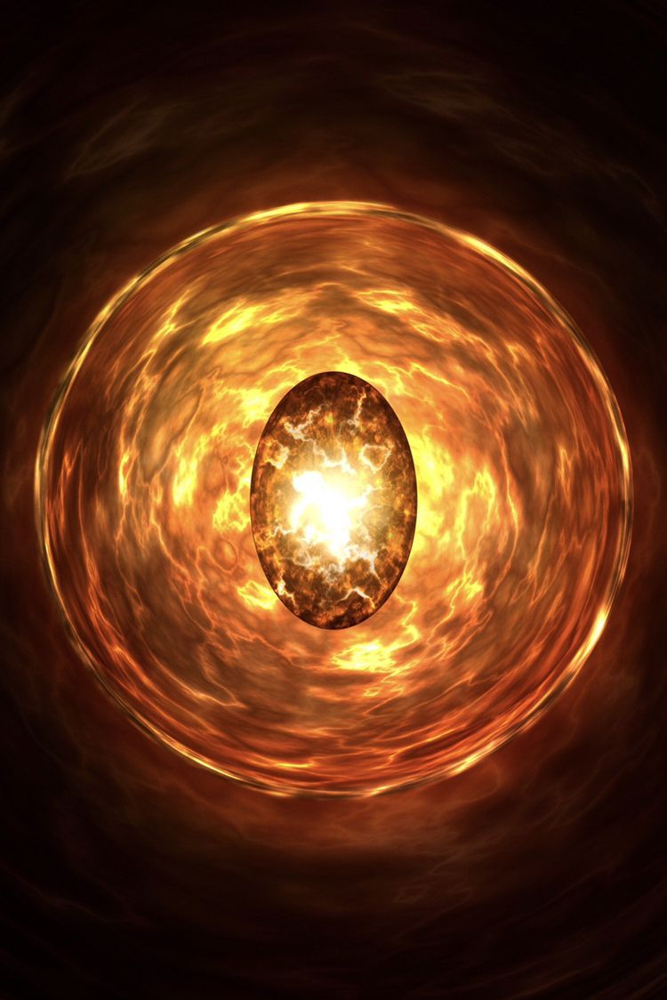
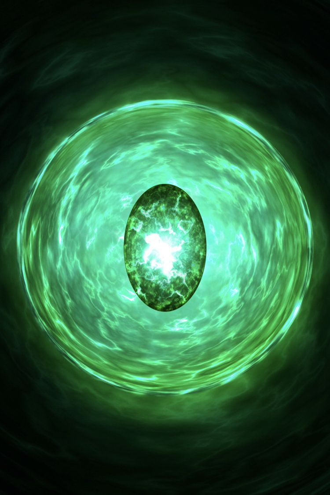
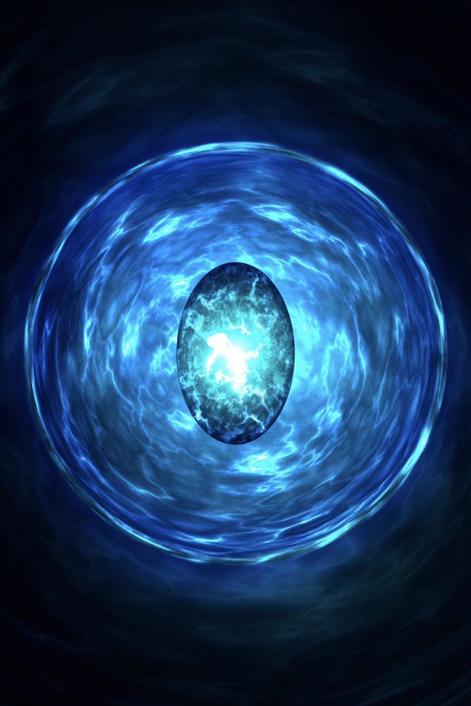
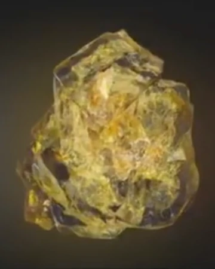
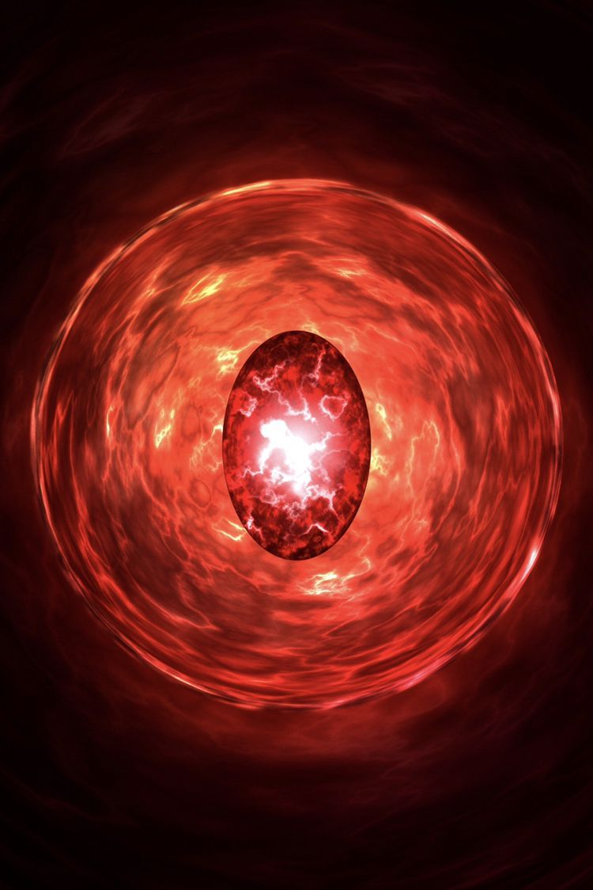
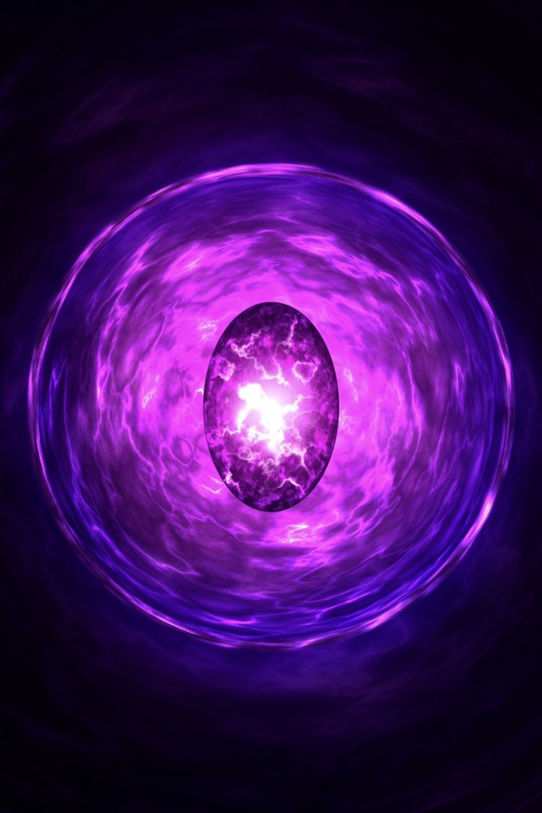

| Name | Colour | Powers and capabilities | Image |
|---|---|---|---|
| Soul | Orange | Allows the user to steal, control, manipulate, and alter living and dead souls; as well as animate the motionless. The Soul Gem also acts as a gateway to an idyllic pocket universe. At full potential, when backed by the Power Gem, the Soul Gem grants the user control over all life in the universe. |  |
| Time | Green | Allows the user to see into the past and the future; stop, slow down, speed up or reverse the flow of time; travel through time; change the past and the future; age and de-age beings, and trap people or entire universes in unending loops of time. At full potential, when backed by the Power Gem, the Time Gem grants the user omniscience and total control over the past, present, and future. |  |
| Space | Blue | Allows the user to exist in any location; move any object anywhere throughout reality; warp or rearrange space; teleport themselves and others; increase their speed, and alter the distance between objects contrary to the laws of physics. At full potential, when backed by the Power Gem, the Space Gem grants the user omnipresence |  |
| Mind | Yellow | Allows the user to enhance their mental and psionic abilities and access the thoughts and dreams of other beings. At full potential, when backed by the Power Gem, the Mind Gem can access all minds in existence simultaneously. The Mind Gem is also the manifestation of the universal subconscious. |  |
| Reality | Red | Allows the user to fulfill their wishes, even if the wish is in direct contradiction with scientific laws, and do things that would normally be impossible. At full potential, when backed by the other five Gems, the Reality Gem allows the user to alter reality on a universal scale and also create any type of alternate reality the user wishes. |  |
| Power | Purple | Allows the user to access and manipulate all forms of energy and/or powers; i.e. enhancing their physical strength and durability; augment any superhuman ability; and boost the effects of the other five Gems. At full potential, the Power Gem grants the user omnipotence. |  |